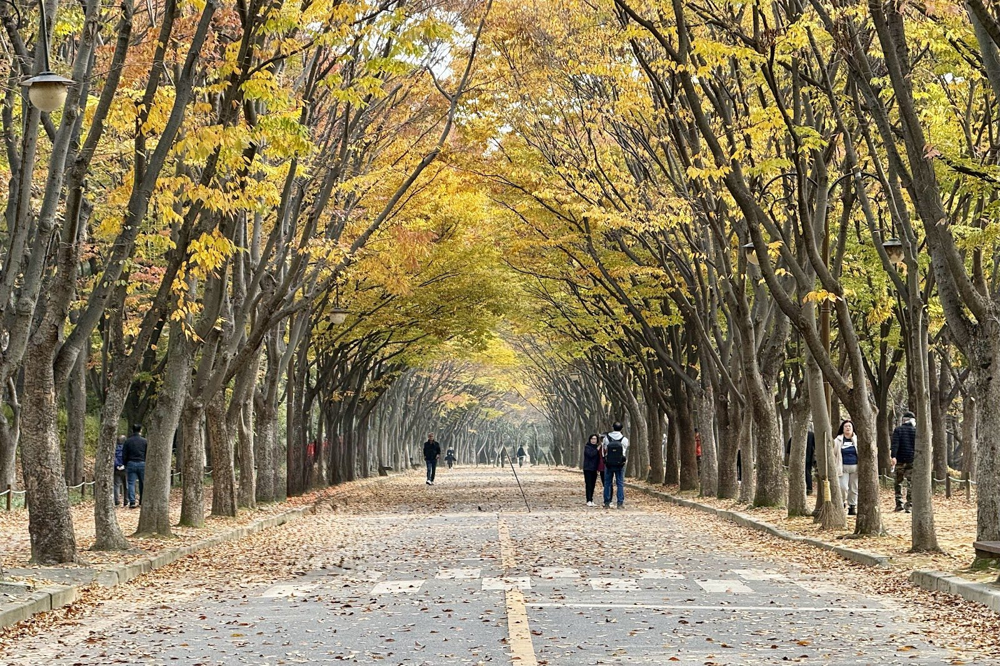

Incheon · Leisure
Incheon Grand Park: A Green Escape in the City
By Korea Plainly · Published · Updated

Photo: Andy Kim via Google Maps
At a glance: Incheon Grand Park is a spacious city park with a zoo, botanical garden and room to unwind among green landscapes.
Visiting Incheon Grand Park
- Region
- Incheon
- Address
- 236 Munemi-ro, Namdong-gu, Incheon
- Google rating
- 4.5/5 from 6,762 reviews (October 2026)
Opening hours, prices and closures change. Check the map before you go.
What it is
Incheon Grand Park is a large public park in Namdong-gu, on the southeastern side of Incheon. Its open spaces, trees and garden areas offer a refreshing break from busy streets and built-up neighbourhoods. The grounds include a zoo and a botanical garden, so you can mix a quiet walk with a closer look at plants and animals.
The park suits a range of visitors: families looking for outdoor space, couples seeking an easy stroll and solo travellers who want a slower day between city sightseeing. It feels more like a place to spend time outdoors than a single attraction to tick off quickly. Google gives it a rating of 4.5 from 6,762 reviews.
Find it at 236 Munemi-ro, Namdong-gu, Incheon. Incheon Grand Park Station on Incheon Subway Line 2 is a useful starting point for reaching the park; check a map when you arrive to choose the entrance and route that work best for your plans.
What to see and do
Start with a walk through the open grounds. The park’s broad, leafy setting gives you space to stretch your legs, take a break on a bench or simply enjoy a change of pace. Follow the paths at a relaxed speed rather than trying to cover everything at once: the park is large, and part of its appeal is having room to wander.
Make time for the botanical garden if you enjoy seeing different kinds of plants in a more cultivated setting. It offers a pleasant contrast to the wider park landscape and can be a good stop on a warm or rainy day. The zoo is another main draw, especially for visitors with children. You can build your visit around these facilities or treat them as optional stops during a longer walk.
In spring, fresh growth and blossoms bring colour to the park; in autumn, changing leaves make a walk especially inviting. Summer is greener and can be hot, so plan for shade and water breaks. In any season, the open spaces make it easy to pause and take in the surroundings instead of rushing from one sight to the next.
Bring a camera if you like capturing garden details or seasonal scenery. If you are travelling with children, let them set the pace and leave room for unplanned stops. The park is also a good place to take a breather after several days of museums, shopping or busy urban sightseeing.
How to plan your visit
Set aside at least a few hours for a relaxed visit, and allow longer if you want to explore both the zoo and botanical garden as well as walk through the grounds. Trying to see every part in a short stop can make the outing feel hurried. Pick one or two priorities, then add a stroll or rest break around them.
Morning is a comfortable choice for walking, particularly in warmer weather, while later in the day can suit visitors looking for a gentle end to their sightseeing. Spring and autumn are especially appealing for outdoor time. On sunny days, bring drinking water, sun protection and comfortable shoes; after rain, paths may be damp.
For a simple day out, pair the park with a meal or café stop in the wider Namdong-gu area. If you are planning a broader Incheon itinerary, keep the park as a separate, nature-focused outing rather than trying to squeeze it between distant attractions. Incheon has several distinct areas, and allowing time for travel between them makes the day more enjoyable.
Good to know
Wear shoes you can walk in, and bring a light layer if you expect to stay outdoors for several hours. If you are visiting with a group, agree on a meeting point before splitting up, since the grounds cover a wide area. Keep to marked paths and follow posted guidance around the zoo, garden and shared spaces.
Check current hours and prices on Naver Map before setting out, especially if you plan to visit the zoo or botanical garden.
FAQ
Is Incheon Grand Park suitable for families?
Yes. The zoo, botanical garden and open outdoor areas give families several ways to spend time together. Choose a manageable route and leave room for breaks.
How long should I spend at the park?
A few hours works well for a walk and one or two main stops. Allow more time if you want to explore both the zoo and botanical garden at an unhurried pace.
Can I reach Incheon Grand Park by subway?
Yes. Incheon Grand Park Station on Incheon Subway Line 2 is a useful station for the park. Check a map for the best route from the station to the entrance you want.